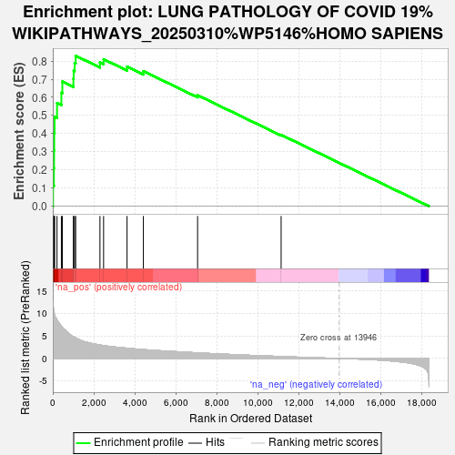
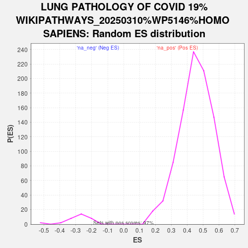

| | | Dataset | ranked_genes |
| Phenotype | NoPhenotypeAvailable |
| Upregulated in class | na_pos |
| GeneSet | LUNG PATHOLOGY OF COVID 19%WIKIPATHWAYS_20250310%WP5146%HOMO SAPIENS |
| Enrichment Score (ES) | 0.82909006 |
| Normalized Enrichment Score (NES) | 1.8166883 |
| Nominal p-value | 0.0 |
| FDR q-value | 0.0 |
| FWER p-Value | 0.0 |
Table: GSEA Results Summary

Fig 1: Enrichment plot: LUNG PATHOLOGY OF COVID 19%WIKIPATHWAYS_20250310%WP5146%HOMO SAPIENS
Profile of the Running ES Score & Positions of GeneSet Members on the Rank Ordered List
| SYMBOL | RANK IN GENE LIST | RANK METRIC SCORE | RUNNING ES | CORE ENRICHMENT | | 1 | TLR8 | 12 | 12.103 | 0.1133 | Yes |
| 2 | TNF | 54 | 10.450 | 0.2094 | Yes |
| 3 | CXCL11 | 62 | 10.415 | 0.3070 | Yes |
| 4 | CGAS | 70 | 10.184 | 0.4025 | Yes |
| 5 | IL1B | 89 | 9.802 | 0.4938 | Yes |
| 6 | CXCL10 | 207 | 8.611 | 0.5685 | Yes |
| 7 | CXCL9 | 419 | 7.183 | 0.6245 | Yes |
| 8 | TLR7 | 466 | 6.892 | 0.6869 | Yes |
| 9 | IFIH1 | 1005 | 4.818 | 0.7029 | Yes |
| 10 | STING1 | 1018 | 4.789 | 0.7473 | Yes |
| 11 | RIGI | 1066 | 4.685 | 0.7888 | Yes |
| 12 | TBK1 | 1116 | 4.561 | 0.8291 | Yes |
| 13 | NFKB1 | 2299 | 2.986 | 0.7927 | No |
| 14 | CCL2 | 2476 | 2.855 | 0.8099 | No |
| 15 | IRF3 | 3619 | 2.283 | 0.7690 | No |
| 16 | TLR3 | 4415 | 1.967 | 0.7441 | No |
| 17 | MAVS | 7057 | 1.237 | 0.6116 | No |
| 18 | IL18 | 11128 | 0.419 | 0.3933 | No |
Table: GSEA details [plain text format]

Fig 2: LUNG PATHOLOGY OF COVID 19%WIKIPATHWAYS_20250310%WP5146%HOMO SAPIENS: Random ES distribution
Gene set null distribution of ES for LUNG PATHOLOGY OF COVID 19%WIKIPATHWAYS_20250310%WP5146%HOMO SAPIENS